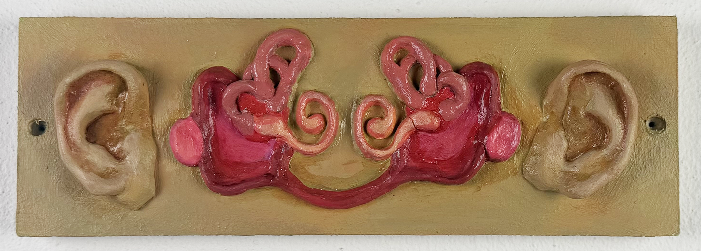
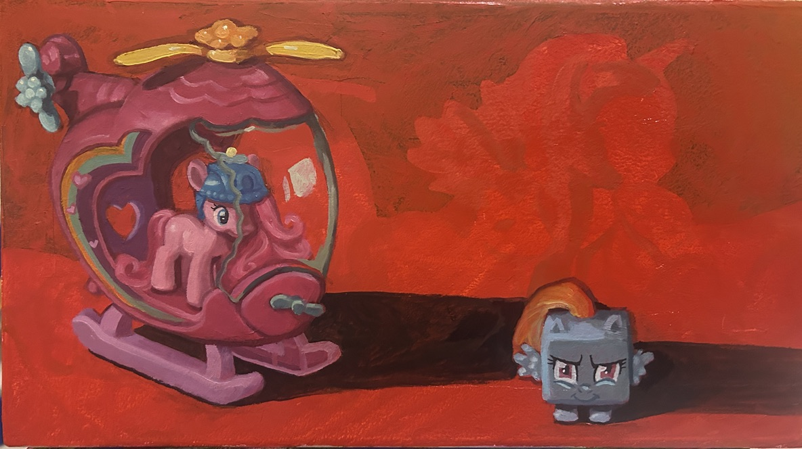

art art fart art. i'm heading off to art school in the fall and i'm very excited. here's some pieces from my portfolio and some pieces not from my portfolio






the videos take a while to load
cool, right? i like datamoshing i should do it more. if i remember i'll link the website i use in extra